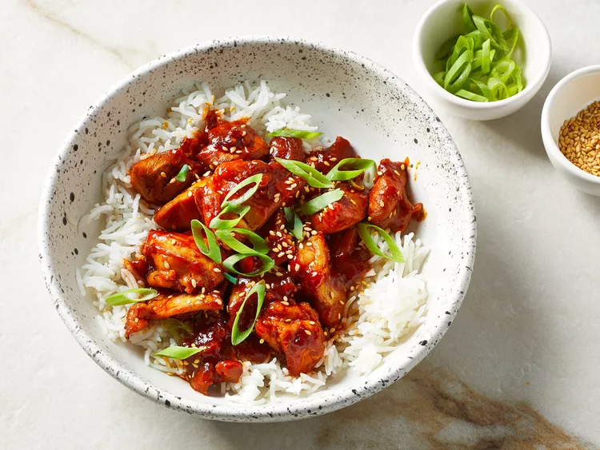

Gochujang Chicken

Description
Sweet and sour gochujang chicken is a quick wok dish featuring
Korean flavors.
This test kitchen-approved gochujang chicken recipe is "fast, flavorful,"
and fun," according to recipe tester Kathryn Hendrix.
Ingredients
-
Gochujang: This recipe starts with 1/3 cup gochujang
(Korean hot pepper paste).
-
Soy sauce: Less sodium soy sauce lends tons of savory,
umami-rich flavor.
-
Mirin: Sweet rice wine gives the dish even more
umami-rich, yet mildly sweet, flavor.
-
Honey: Honey puts the "sweet" in the "sweet and
spicy."
-
Garlic: Take the flavor up a notch with three cloves
of garlic.
-
Sesame oil: Add one or two teaspoons of sesame oil,
depending on your flavor preferences.
-
Ginger: For the most delicious results, grate your
own fresh ginger.
-
Canola oil: Cook the chicken in canola oil.
-
Chicken: Opt for skinless, boneless chicken thighs.
-
Garnishes: Garnish the gochujang chicken with toasted
sesame seeds and green onions.
-
Rice: Serve the gochujang chicken over white rice.
Steps
- Make the sauce in a bowl and cook the chicken in a wok.
-
Add the sauce to the wok (with the chicken) and cook until thick
and bubbly.
- Garnish and serve over rice.